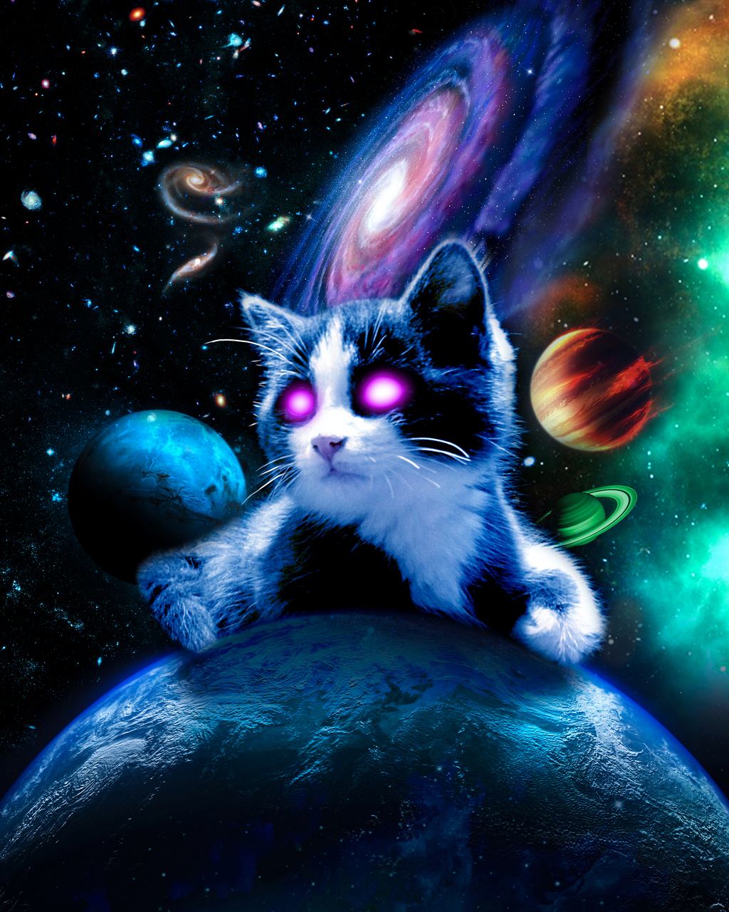
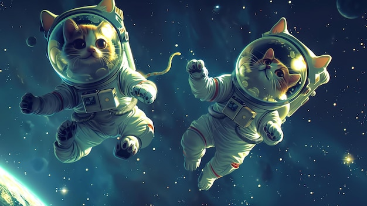
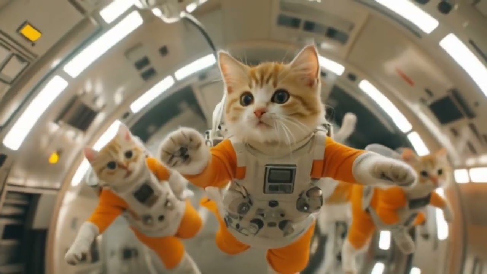

In the beginning, before stars were scattered like sand in the night,
there was only the Great Cat—a cosmic, shimmering being with eyes like
twin galaxies.

This Cat existed in the void, neither restless nor satisfied, simply
stretching in the nothingness. But one day, a flicker of mischief
crossed the Great Cat’s mind. It raised a paw and, with a swipe,
scratched at the fabric of the void. Sparks flew, igniting into stars,
and with each playful paw-bat, planets and nebulae formed. Thus, the
cosmos was born out of the Great Cat’s whims, its purr the resonant hum
that gave rhythm to time.
To keep the universe in order, the Great Cat populated the heavens with Star Cats—celestial felines who watched over the galaxies. Each Star Cat had a coat of stardust and eyes that held the wisdom of ancient constellations. They roamed across the cosmos, leaping from star to star, their tails leaving trails of light that travelers might later mistake for shooting stars. These cats ensured that black holes didn’t grow unruly, comets stayed on their paths, and that planets spun harmoniously in their orbits. They also napped—a lot, as only cosmic cats could.
Beyond the boundaries of known space, there existed realms untouched by mortal understanding. Every so often, curious Star Cats would wander off into these hidden regions, bringing back knowledge of distant worlds and secrets untold. They discovered realms of rainbow light and whispered of places where time flowed backward. But there was one realm that fascinated them most—a place where mysterious beings called "humans" paid homage to tiny cats, treating them as kings and queens. Little did humans know that these earthly cats were actually ambassadors, sent to observe and report back.
Once every thousand years, all the Star Cats would gather at the Cosmic Cradle, a nebula shaped like a curled-up kitten. Here, they held council under the watchful eye of the Great Cat. They shared tales of their adventures, and younger Star Cats listened in awe as the elders recounted the creation of the first planets. They debated over which galaxies needed tidying up, where new stars should be born, and how best to spread stardust so that humans would look up and dream. The Great Cat would nod approvingly, basking in their efforts and falling into a contented, timeless purr.
And so, the universe continued in its serene, orderly dance. On Earth, cats held a quiet, cosmic purpose. Humans sensed their mystery, worshiped their elegance, and indulged their whims, all while unaware of their true origins. Every cat that blinked lazily in the sun, every kitten that chased dust motes in a beam of light, carried within them the memory of stars and the knowledge of ancient cosmic councils. Each night, as cats looked up at the sky, they remembered their place in the universe, content to guard the balance of creation in their own feline way.
